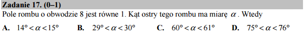

Kąty, radiany i szacowanie funkcji sinus¶
Jeżeli obwód rombu wynosi \(8\) to jego bok jest cztery razy mniejszy czyli ma ma długość \(a=2\). Z drugiej strony pole rombu to \(P=a^2 \sin (\alpha)\). Możemy więc wyznaczyć kąt \(\alpha\) z równania:
czyli:
Mając do dyspozycji Sage rozwiązanie otrzymujemy natychmiast:
Gotowe!
Radiany vs. stopnie
Argumentem funkcji trygonometrycznych są kąty w radianach natomiast w zadaniu (i życiu codziennym) posługujemy się stopniami. Przeliczanie radianów w stopnie i na odwrót jest bardzo proste, wystarczy pamiętać, że kąt pełny \(360^\circ\) to \(2 \pi \, \mathrm{rad}\). Wynika z tego, że jeżeli mamy wynik w radianach, to aby przeliczyć go na stopnie należy pomnożyć przez \(\frac{180}{\pi}\). Z drugiej strony mając stopnie możemy otrzymać radiany mnożąc przez \(\frac{\pi}{180}\)
Przypuścmy, że nie potrafimy oszacować numeryczne wartości \(\arcsin(\frac{1}{4})\). Czy możemy rozwiązać to zadanie?
Wiemy przecież, że \(\arcsin(\frac{1}{2})=\frac{pi}{6}\mathrm{rad} =30^\circ\) Narysujmy wykres funkcji \(\sin\) dla kątów ostrych.
Punkt \((30^\circ,\frac{1}{2})\) należy do wykresu funkcji sinus:
Zauważmy, że dla kątów mniejszych od \(30^\circ\) funkcja sinus może być całkiem nieźle przybliżona przez liniową:
Ponadto widać, że wykres sinusa leży pod prostą:
lub
Możemy to zinterpretować następująco - dla małych kątów sinus rośnie proporcjonalnie z kątem. Jeżeli dla \(30^\circ\) wynosił \(1/2\) to będzie \(\sin 15^\circ \simeq \frac{1}{4}\). Zobaczmy graficznie jak przedstawia się nasze przybliżenie: